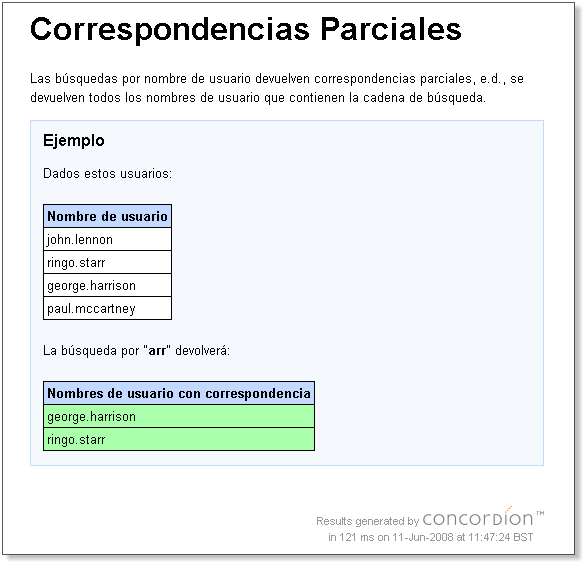

Tutorial
Esta guía explica los mecanismos básicos para pasar de especificaciones a especificaciones activas usando Concordion. No debería tomarle más de 15 a 30 minutos el completarla, asumiendo que ya se está familiarizado con Java, JUnit y XHTML.
- Instalación
- Los Fundamentos
concordion:assertEqualsconcordion:setconcordion:executeconcordion:execute en una <table>concordion:verifyRows
Instalación
Concordion requiere JDK 5.0 o superior y los siguientes JARs en el classpath:
- concordion-1.5.1.jar
- junit-4.12.jar (o junit-3.8.2.jar) (http://www.junit.org)
- hamcrest-core-1.3.jar (http://hamcrest.googlecode.com) (requerido para JUnit 4.11 o más tarde)
- ognl-2.6.9.jar (http://en.wikipedia.org/wiki/OGNL)
- xom-1.2.5.jar (http://www.xom.nu)
Todos los JARs están incluidos en la distribución.
Para que ocurra la magia, el documento debe ser antes instrumentado con comandos.
<html xmlns:concordion="http://www.concordion.org/2007/concordion">
Empecemos con un ejemplo realmente sencillo...
concordion:assertEquals
-
Creemos un paquete Java llamado
"example". -
Creemos un fichero
"HelloWorld.html"dentro del paquete conteniendo:<html> <body> <p>Hello World!</p> </body> </html>
-
Ahora instrumentemos el fichero como sigue:
<html xmlns:concordion="http://www.concordion.org/2007/concordion"> <body> <p concordion:assertEquals="getGreeting()">Hello World!</p> </body> </html>
-
En el mismo paquete
example, creemos un fichero Java"HelloWorldTest.java"conteniendo:package example; import org.concordion.integration.junit3.ConcordionTestCase; public class HelloWorldTest extends ConcordionTestCase { public String getGreeting() { return "Hello World!"; } }
-
Ahora ejecutemos la clase
HelloWorldTestusando JUnit.
C:\temp\concordion-output\example\HelloWorld.html Successes: 1 Failures: 0
Propiedades Java Bean
<html xmlns:concordion="http://www.concordion.org/2007/concordion"> <body> <p concordion:assertEquals="greeting">Hello World!</p> </body> </html>
concordion:set
Dada una especificación como ésta:
<html> <body> <p> El saludo para el usuario Pepe será: ¡Hola Pepe! </p> </body> </html>
<html> <body> <p> El usuario para el usuario <span>Pepe</span> será: <span>¡Hola Pepe!</span> </p> </body> </html>
Ahora podemos instrumentar el documento:
<html xmlns:concordion="http://www.concordion.org/2007/concordion"> <body> <p> El saludo para el usuario <span concordion:set="#firstName">Pepe</span> será: <span concordion:assertEquals="greetingFor(#firstName)">¡Hola Pepe!</span> </p> </body> </html>
Nuestro código Java de la fixture necesitará ser modificado:
package example; import org.concordion.integration.junit3.ConcordionTestCase; public class HelloWorldTest extends ConcordionTestCase { public String greetingFor(String firstName) { return "BLA"; } }
package example; import org.concordion.integration.junit3.ConcordionTestCase; public class HelloWorldTest extends ConcordionTestCase { public String greetingFor(String firstName) { return "¡Hola " + firstName + "!"; } }
concordion:execute
El comando execute tiene tres usos principales:
- Ejecutar una instrucción cuyo resultado es "void".
- Ejecutar una instrucción cuyo resultado es un objeto (para permitir comprobar varias propiedades de dicho objeto).
- Manejar frases con estructuras poco habituales.
Ejecutar una instrucción cuyo resultado es void
En ocasiones puede ser útil ejecutar una
instrucción que establezca de alguna manera el estado del sistema.
Cada vez que hacemos esto, sin embargo, deberían sonar alarmas en
nuestras cabezas y preguntarnos si no estaremos (inadvertidamente)
escribiendo un script en vez de una especificación. Por ejemplo, una
llamada a "clearDatabase()" sería un evidente mal uso (ver
Técnicas (en inglés) para
saber más sobre este tema).
Como regla general, los métodos que devuelven void llamados desde un execute
deberían comenzar con la palabra set o setUp. P.ej. setUpUser(#username).
Tomemos la siguiente especifación como ejemplo:
<html xmlns:concordion="http://www.concordion.org/2007/concordion">
<body>
<p>
Si la hora es:
<span concordion:set="#time">09:00AM</span>
<span concordion:execute="setCurrentTime(#time)" />
entonces el saludo será:
<span concordion:assertEquals="getGreeting()">¡Buenos Días Mundo!</span>
</p>
</body>
</html>
Nuestro código Java de la fixture será como éste:
package example;
import org.concordion.integration.junit3.ConcordionTestCase;
public class HelloWorldTest extends ConcordionTestCase {
public void setCurrentTime(String time) {
// TODO
}
public String getGreeting() {
return "TODO";
}
}
Realmente nosotros podemos eliminar la necesidad de usar ese
comando concordion:set usando en su lugar la variable
especial #TEXT (la cuál contiene el texto del elemento
actual). La instrumentación abreviada queda así:
<html xmlns:concordion="http://www.concordion.org/2007/concordion">
<body>
<p>
Si la hora es:
<span concordion:execute="setCurrentTime(#TEXT)">09:00AM</span>
entonces el saludo será:
<span concordion:assertEquals="getGreeting()">¡Buenos Días Mundo!</span>
</p>
</body>
</html>
Una alternativa sería cambiar la firma del método
getGreeting() para permitir pasarle la hora
como un parámetro. Este el camino que normalmente tomaríamos.
Un execute sin valor de retorno es una mala
señal; p.ej. estamos escribiendo un script o nuestra especificación
contiene demasiadas variables y cubre demasiados comportamientos.
Sin embargo, la funcionalidad está ahí por si la necesitamos.
Ejecutar una instrucción cuyo resultado es un objeto
<html xmlns:concordion="http://www.concordion.org/2007/concordion"> <head> <link href="../concordion.css" rel="stylesheet" type="text/css" /> </head> <body> <h1>Separando Nombres</h1> <p> Para ayudar a personalizar nuestros envíos postales, queremos tener el nombre y el apellido del cliente. Desgraciadamente los datos del cliente que nos han proporcionado sólo contienen nombres completos. </p> <p> Por lo tanto el sistema intenta separar un nombre completo en sus componentes separándolos por el espacio en blanco. </p> <div class="example"> <h3>Ejemplo</h3> <p> El nombre completo <span concordion:execute="#result = split(#TEXT)">Juan Pérez</span> se separará en nombre <span concordion:assertEquals="#result.firstName">Juan</span> y apellido <span concordion:assertEquals="#result.lastName">Pérez</span>. </p> </div> </body> </html>
package example; import org.concordion.integration.junit3.ConcordionTestCase; public class SplittingNamesTest extends ConcordionTestCase { }
Si ejecutamos la fixture tal y como está (e.d. vacía), la salida sería así:
Nos dice lo que tenemos que hacer. Arreglamos nuestro código de fijación:
package example; import org.concordion.integration.junit3.ConcordionTestCase; public class SplittingNamesTest extends ConcordionTestCase { public Result split(String fullName) { return new Result(); } class Result { public String firstName = "TODO"; public String lastName = "TODO"; } }
Lo ejecutamos ahora y obtenemos:
package example; import org.concordion.integration.junit3.ConcordionTestCase; public class SplittingNamesTest extends ConcordionTestCase { public Result split(String fullName) { Result result = new Result(); String[] words = fullName.split(" "); result.firstName = words[0]; result.lastName = words[1]; return result; } class Result { public String firstName; public String lastName; } }

class Result { private final String firstName; private final String lastName; public Result(String firstName, String lastName) { this.firstName = firstName; this.lastName = lastName; } public String getFirstName() { return firstName; } public String getLastName() { return lastName; } }
Manejar frases con estructuras poco habituales
Por ejemplo, digamos que tenemos la especificación:
<p> Tras acceder al sistema, el saludo que recibirá el usuario <span>Pepe</span> será: <span>¡Hola Pepe!</span> </p>
Esto es fácil de instrumentar:
<p> Tras acceder al sistema, el saludo que recibirá el usuario <span concordion:set="#firstName">Pepe</span> será: <span concordion:assertEquals="greetingFor(#firstName)">¡Hola Pepe!</span> </p>
Pero que hubiera pasado si nuestra especificación se hubiera escrito como sigue:
<p> Se debería mostrar el saludo "<span>¡Hola Pepe!</span>" al usuario <span>Pepe</span> cuando éste acceda al sistema. </p>
<p concordion:execute="#greeting = greetingFor(#firstName)"> Se debería mostrar el saludo "<span concordion:assertEquals="#greeting">¡Hola Pepe!</span>" al usuario <span concordion:set="#firstName">Pepe</span> cuando éste acceda al sistema. </p>
concordion:execute en una <table>
Podemos instrumentar esta tabla, de una manera un poco larga, como sigue:
<html xmlns:concordion="http://www.concordion.org/2007/concordion"> <head> <meta http-equiv="Content-Type" content="text/html; charset=UTF-8" /> <link href="../concordion.css" rel="stylesheet" type="text/css" /> </head> <body> <h1>Separando Nombres</h1> <p> Para ayudar a personalizar nuestros envíos postales, queremos tener el nombre y el apellido del cliente. Desgraciadamente los datos del cliente que nos han proporcionado sólo contienen nombres completos. </p> <p> Por lo tanto el sistema intenta separar un nombre completo en sus componentes separándolos por el espacio en blanco. </p> <div class="example"> <h3>Ejemplos</h3> <table> <tr> <th>Nombre Completo</th> <th>Nombre</th> <th>Apellido</th> </tr> <tr concordion:execute="#result = split(#fullName)"> <td concordion:set="#fullName">Juan Pérez</td> <td concordion:assertEquals="#result.firstName">Juan</td> <td concordion:assertEquals="#result.lastName">Pérez</td> </tr> <tr concordion:execute="#result = split(#fullName)"> <td concordion:set="#fullName">Felipe Reyes</td> <td concordion:assertEquals="#result.firstName">Felipe</td> <td concordion:assertEquals="#result.lastName">Reyes</td> </tr> </table> </div> </body> </html>
<html xmlns:concordion="http://www.concordion.org/2007/concordion"> <head> <meta http-equiv="Content-Type" content="text/html; charset=UTF-8" /> <link href="../concordion.css" rel="stylesheet" type="text/css" /> </head> <body> <h1>Separando Nombres</h1> <p> Para ayudar a personalizar nuestros envíos postales, queremos tener el nombre y el apellido del cliente. Desgraciadamente los datos del cliente que nos han proporcionado sólo contienen nombres completos. </p> <p> Por lo tanto el sistema intenta separar un nombre completo en sus componentes separándolos por el espacio en blanco. </p> <div class="example"> <h3>Ejemplos</h3> <table concordion:execute="#result = split(#fullName)"> <tr> <th concordion:set="#fullName">Nombre Completo</th> <th concordion:assertEquals="#result.firstName">Nombre</th> <th concordion:assertEquals="#result.lastName">Apellido</th> </tr> <tr> <td>Juan Pérez</td> <td>Juan</td> <td>Pérez</td> </tr> <tr> <td>Felipe Reyes</td> <td>Felipe</td> <td>Reyes</td> </tr> </table> </div> </body> </html>
Esta instrumentación tiene el mismo comportamiento que la del ejemplo anterior.
concordion:verifyRows
El código HTML instrumentado para esta especificación es como sigue:
<html xmlns:concordion="http://www.concordion.org/2007/concordion"> <head> <meta http-equiv="Content-Type" content="text/html; charset=UTF-8" /> </head> <body> <h1>Correspondencias Parciales</h1> <p> Las búsquedas por nombre de usuario devuelven correspondencias parciales, e.d., se devuelven todos los nombres de usuario que contienen la cadena de búsqueda. </p> <div class="example"> <h3>Ejemplo</h3> <p>Dados estos usuarios:</p> <table concordion:execute="setUpUser(#username)"> <tr><th concordion:set="#username">Nombre de usuario</th></tr> <tr><td>john.lennon</td></tr> <tr><td>ringo.starr</td></tr> <tr><td>george.harrison</td></tr> <tr><td>paul.mccartney</td></tr> </table> <p>La búsqueda por "<b concordion:set="#searchString">arr</b>" devolverá:</p> <table concordion:verifyRows="#username : getSearchResultsFor(#searchString)"> <tr><th concordion:assertEquals="#username">Nombres de usuario con correspondencia</th></tr> <tr><td>george.harrison</td></tr> <tr><td>ringo.starr</td></tr> </table> </div> </body> </html>
La sintaxis del comando verifyRows es:
#loopVar : expression
El esqueleto del código de fijación sería como sigue:
public class PartialMatchesTest extends ConcordionTestCase { public void setUpUser(String username) { // TODO: Dar de alta al usuario en el sistema } public Iterable<String> getSearchResultsFor(String searchString) { // TODO: Realizar la búsqueda y devolver los resultados reales return new ArrayList<String>(); } }
Si ejecutamos el test con este esqueleto obtenemos:
public class PartialMatchesTest extends ConcordionTestCase { private Set<String> usernamesInSystem = new HashSet<String>(); public void setUpUser(String username) { usernamesInSystem.add(username); } public Iterable<String> getSearchResultsFor(String searchString) { SortedSet<String> matches = new TreeSet<String>(); for (String username : usernamesInSystem) { if (username.contains(searchString)) { matches.add(username); } } return matches; } }
Ahora cuando ejecutamos el test obtenemos un éxito:

Éstas son las características esenciales de Concordion y deberían ser todo lo que necesitaramos para comenzar. En la página Technique podemos encontrar consejos sobre cómo enfocar adecuadamente nuestras especificaciones.